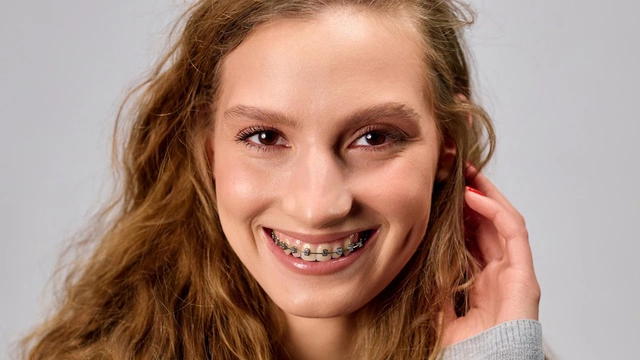

Меняется ли лицо после брекетов? Объясняет стоматолог

Лицо и прикус — это единая функциональная система. Когда мы корректируем положение зубов, мы неизбежно влияем на профиль, положение губ и работу височно-нижнечелюстного сустава.
Профиль. Исправление прикуса влияет на то, как соотносятся верхняя и нижняя челюсти. Если нижняя челюсть была смещена назад или вперёд, после лечения профиль выравнивается, а линия подбородка выглядит аккуратнее. Важно понимать: брекеты могут перемещать только зубы. Они не двигают челюсти. Поэтому гармонизация внешности возможна за счёт выравнивания зубных рядов, но изменить положение самой челюсти ортодонтическое лечение без хирургии не может. Положение губ. Губы опираются на зубы. Если зубной ряд чрезмерно выдвинут вперёд или, наоборот, «западает», это отражается на объёме и положении губ. После выравнивания зубов губы занимают более физиологичное положение, исчезает избыточное напряжение мышц. Овал лица. При выраженных нарушениях прикуса нижняя треть лица может выглядеть укороченной или чрезмерно вытянутой. Коррекция прикуса помогает восстановить пропорции и визуальный баланс.